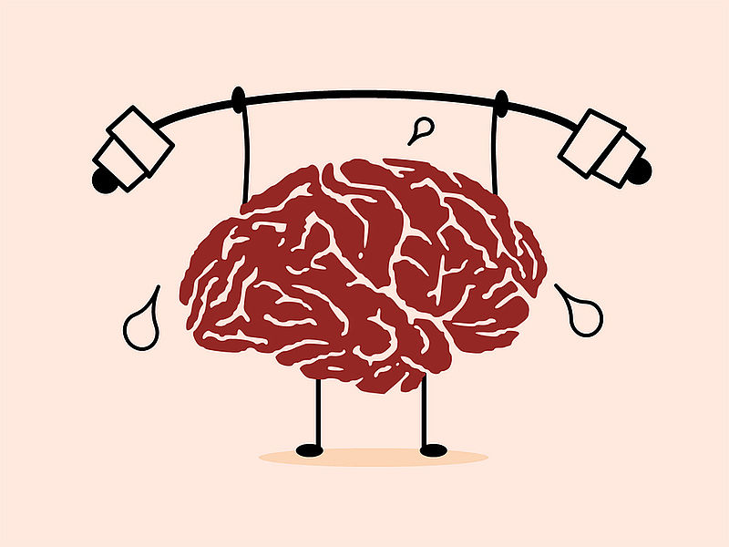
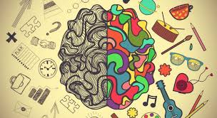

- 
- 
Profesión, una disciplina académica y una ciencia que trata el estudio y el análisis de
la conducta y los procesos mentales de los individuos y de grupos humanos en distintas situaciones,
uyo campo de estudio abarca todos los aspectos de la experiencia humana y lo hace para fines tanto
de investigación como docentes y laborales, entre otros. Hoy en día, la psicología no es
una ciencia unitaria, pues existen diversas perspectivas psicológicas, que se corresponden con
enfoques, corrientes o escuelas cada una de las cuales posee sus propios sistemas conceptuales
y metodologicos
La psicología es una ciencia que ha ido dando grandes pasos para dar
soluciones basadas en metodologías ampliamente estudiadas. Si bien la
psicología estudia los procesos mentales y la conducta, también lo hace
desde los diferentes enfoques que se manejan y que además son recomendados
para los diferentes casos. El alcance de esta ciencia abarca campos como
lo clínico, lo social, laboral y educativo, proponiendo en cada ámbito
soluciones basadas en el desarrollo, equilibrio y bienestar de las personas.
Haz CLICK en el video.